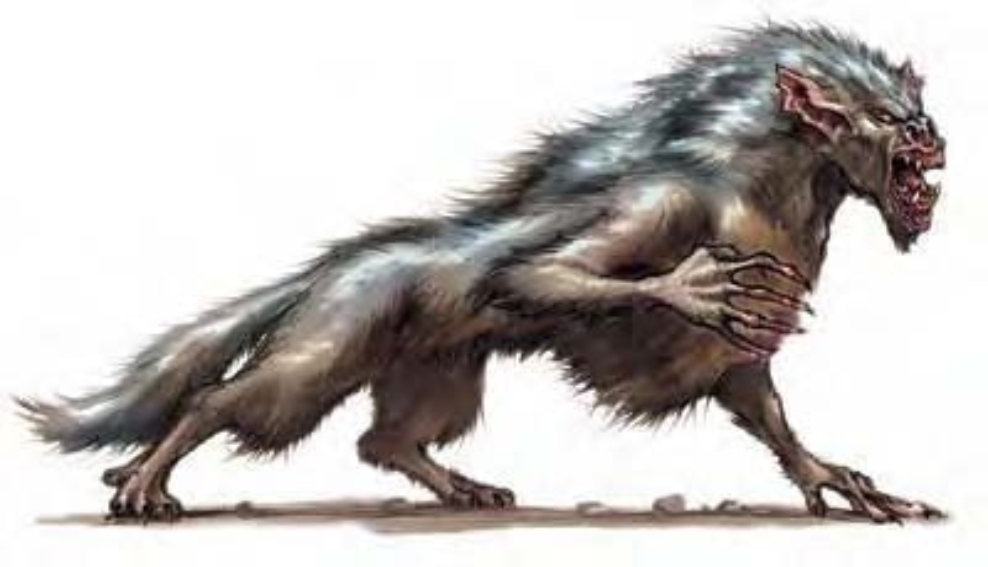

可怕的狼形怪物。有着蓝色刺毛、尖锐长爪。阴影里射出令人厌恶的闪烁目光中蕴含魔鬼般的智慧。犬魔是似狼的魔族，可化成狼或地精的外型。天生形态下的犬魔比较像地精与狼混种，有强力下颚与利爪。犬魔以血与灵魂为食，可增加其力量。犬魔幼兽与狼几无差别，只有体型与爪不同。长得更大更强后，其皮肤会逐渐变深成蓝红色，最终变为全蓝。成熟犬魔约6英尺长，180磅重。兴奋时，犬魔的眼睛会转为橙色。犬魔通晓地精语、座狼语、炼狱语。
战斗无论形态为何，犬魔都可使用爪抓及啮咬攻击。犬魔蔑视武器。他们爱好杀戮，但偏好埋伏突袭，而不喜欢正面攻击。犬魔会先以“满怀绝望”、“魅惑怪物”让对手失去平衡，并尽可能远离敌人主力。在计算伤害减免时，犬魔的天生武器与持有武器都视为邪恶阵营与守序阵营。其天生武器也视为魔法武器。
类法术能力：随意施展――“闪现术”、“浮空术”、“误导”（DC=14）、“盛怒术”（DC=15）；每天1次――“魅惑怪物”（DC=16）、“满怀绝望”（DC=16）、“任意门”。施法者等级与犬魔HD同。豁免DC的调整值与魅力调整值相同。
进食（超自然）：每杀死一个人形生物，犬魔可用一个整轮动作吃掉尸体，吸收其血肉与生命力量。此举将摧毁受害者的身体，使受害者无法以任何需要尸体部分的方式复活。法术“愿望术”、“奇迹术”、“完全复生术”则有50%的机率让受害者复活。每个受害者须分别进行检定。若检定失败，则该受害者无法以任何凡人魔法复活。
犬魔能通过“进食”提升HD。每吸收3个适当尸体，就能增加1HD，同时力量、体质、天生防御也+1。除此之外，犬魔的攻击加值、豁免检定、技能点数、专长、属性值则如常随其异界生物HD提升而增加。只有吃掉HD或等级大于等于犬魔目前HD的尸体才有提升的效果。以此方法达到9HD的犬魔，一旦动作完成，立即变成高等犬魔。
移形（超自然）：使用一个标准动作，犬魔可化为地精形态或狼形态。地精形态下，犬魔无法使用天生武器，但可持用武器并穿着防具。狼形态下，犬魔失去爪抓攻击，但仍保有啮咬攻击。
行动无踪（特异）：犬魔在狼形态下可行动无踪（与同名法术效果相同），属于即时动作。
技能：狼形态下，犬魔在进行“躲藏”检定时具有+4环境加值。
以“进食”达到9HD的犬魔，即变成高等犬魔。高等犬魔可变形为大型类地精生物（约8英尺高，400磅重）或凶暴狼。地精形态下，高等犬魔无法使用天生武器，但可持用武器并穿着防具。凶暴狼形态下，高等犬魔失去爪抓攻击，但仍保有啮咬攻击。
通过“进食”，高等犬魔最高可达到18HD。
类法术能力：除了犬魔的类法术能力外，高等犬魔还拥有下述能力。随意施展――“隐形法球”；每天1次――“集体蛮力术”、“集体变巨术”。施法者等级与高等犬魔HD相同。
战斗：战斗时，高等犬魔偶尔以双手持用魔法武器进行多重攻击（攻击加值+13 / +8），而不用爪抓。高等犬魔每轮也能进行一次啮咬攻击（攻击加值+8）。高等犬魔类法术能力的豁免DC为14+法术等级。
| 资料栏位 | 犬魔 中型异界生物 （邪恶、外界、守序、变形） |
高等犬魔 大型异界生物 （邪恶、外界、守序、变形） |
|---|---|---|
| 生命骰 | 6d8+6 (33HP) | 9d8+27 (67HP) |
| 先攻 | +6 | +6 |
| 速度 | 30英尺 (6格) | 40英尺 (8格) |
| 防御等级 | 18 (+2敏捷、+6天生)、接触12、措手不及16 | 20 (-1体型、+2敏捷、+9天生)、接触11、措手不及18 |
| 基本攻击/擒抱 | +6 / +9 | +9 / +18 |
| 攻击 | 啮咬+9近战 (1d6+3) | 啮咬+13近战 (1d8+5) |
| 全力攻击 | 啮咬+9近战 (1d6+3) 及 2爪抓+4近战 (1d4+1) | 啮咬+13近战 (1d8+5) 及 2爪抓+8近战 (1d6+2) |
| 占用/触及 | 5英尺/5英尺 | 10英尺/5英尺 |
| 特殊攻击 | 类法术能力、进食 | 类法术能力、进食 |
| 特殊能力 | 移形、伤害减免5/魔法、黑暗视觉60英尺、灵敏嗅觉 | 移形、伤害减免10/魔法、黑暗视觉60英尺、灵敏嗅觉 |
| 豁免 | 强韧+6、反射+7、意志+7 | 强韧+9、反射+8、意志+10 |
| 属性 | 力量17、敏捷15、体质13、智力14、感知14、魅力14 | 力量20、敏捷15、体质16、智力18、感知18、魅力18 |
| 技能 | 哄骗+11、交涉+6、易容+2 (扮演+4)、躲藏+11*、威吓+13、跳跃+12、聆听+11、潜行+10、搜索+11、察言观色+11、侦察+11、生存+11 (追踪+13) | 哄骗+16、攀爬+17、专注+15、交涉+8、易容+4 (扮演+6)、躲藏+10*、威吓+18、跳跃+21、聆听+16、潜行+14、察言观色+16、侦察+16、生存+16 (追踪+18)、特技动作+16 |
| 专长 | 战斗反射、精通先攻、追踪 | 战斗施法、战斗反射、精通先攻、追踪 |
| 环境 | 永劫火焚域 | 永劫火焚域 |
| 组织 | 单独或一批 (3-6) | 单独或一批 (3-6) |
| 挑战级数 | 4 | 5 |
| 宝藏 | 双倍标准 | 双倍标准 |
| 阵营 | 总是守序邪恶 | 总是守序邪恶 |
| 进化 | 特殊（见说明） | 特殊（见说明） |
| 等级修正值 | ― | ― |